Computer Science · Ethics · Technology & Society
Vedaj Padman
I study computing systems and the social conditions that shape them. I hold an MS in Computer Science from Northeastern University, Boston, and have worked as a software engineer across India and the United States before returning to research and teaching. My questions tend to be about power: who builds these systems, whose values they encode, and what happens to those who have no say in either. This has led me to work on algorithm auditing, machine ethics, human factors engineering, the spread of misinformation, forensic linguistics, epistemic injustice, and data colonialism. I am also invested in privacy and security, particularly as both become increasingly a luxury rather than a given. I teach as well, and find that it clarifies thinking in ways that research alone does not. Outside of work, I am a trained Indian classical vocalist. I study global languages, read widely, and follow urban planning and transit policy with more attention than most people would consider reasonable. I work with organizations focused on education access for communities that do not often get it, and I think art is worth spending time on. I also cook, with a particular interest in recreating South Indian recipes that have largely fallen out of circulation, the kind that exist only in someone's memory, if at all.
Research Interests
Through My Lens
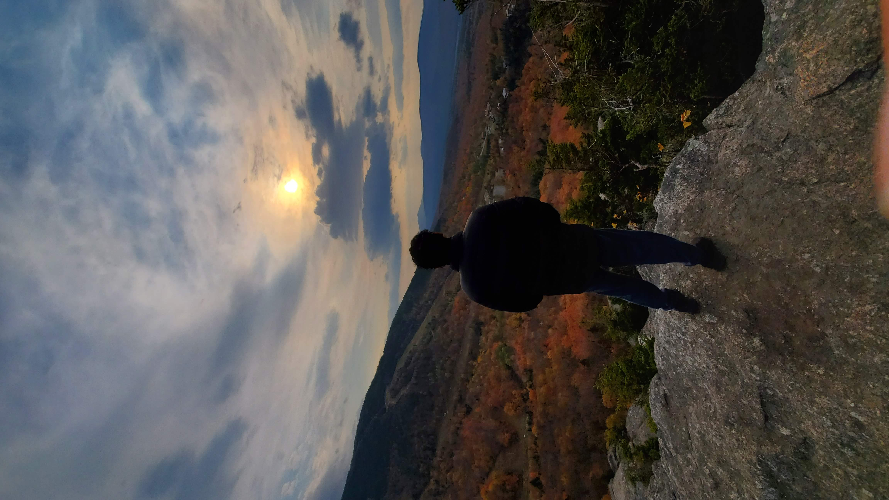
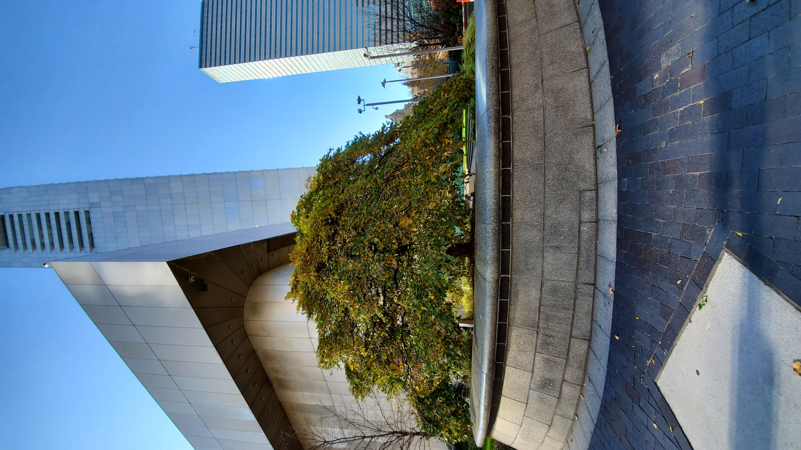
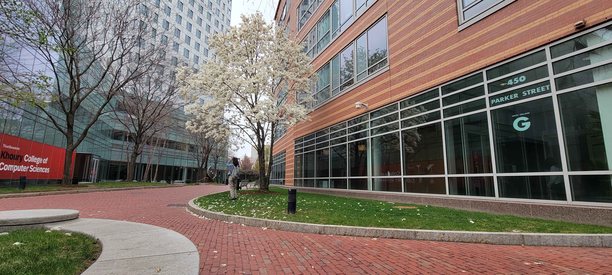
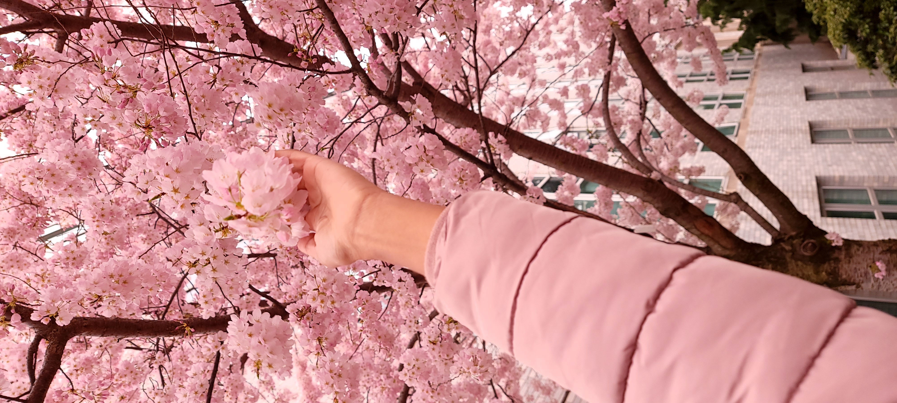

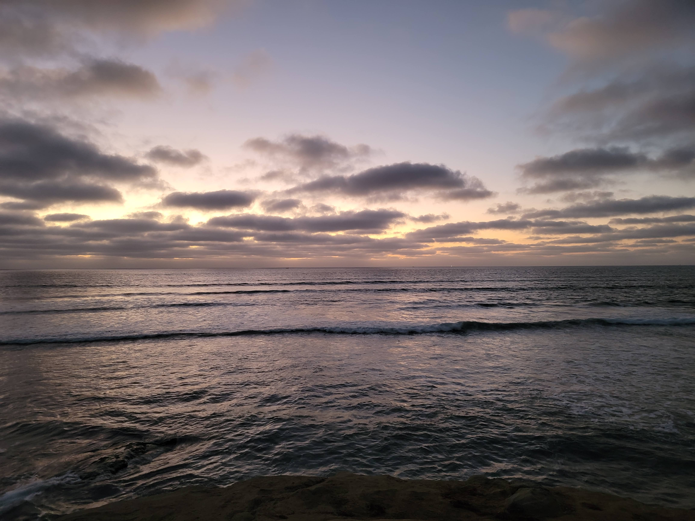
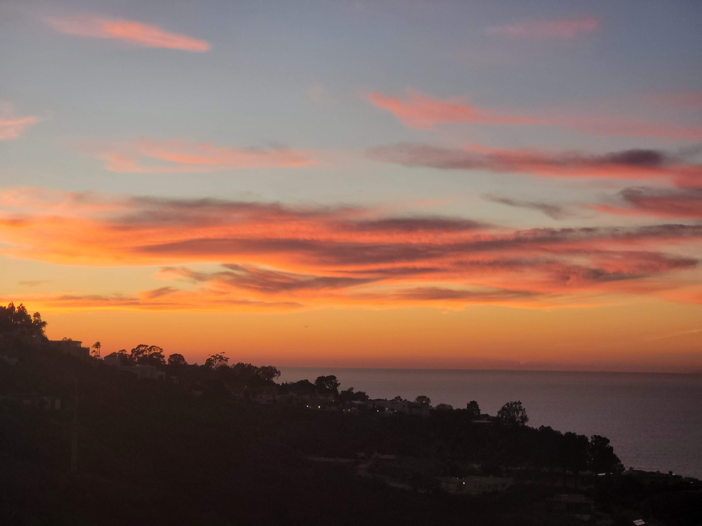
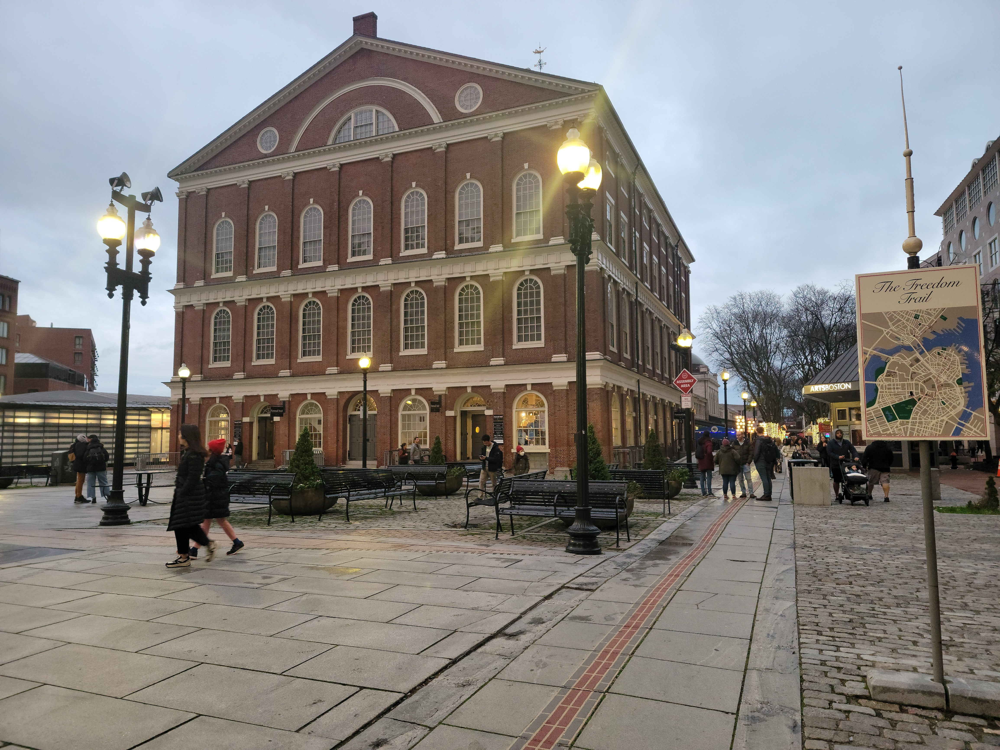
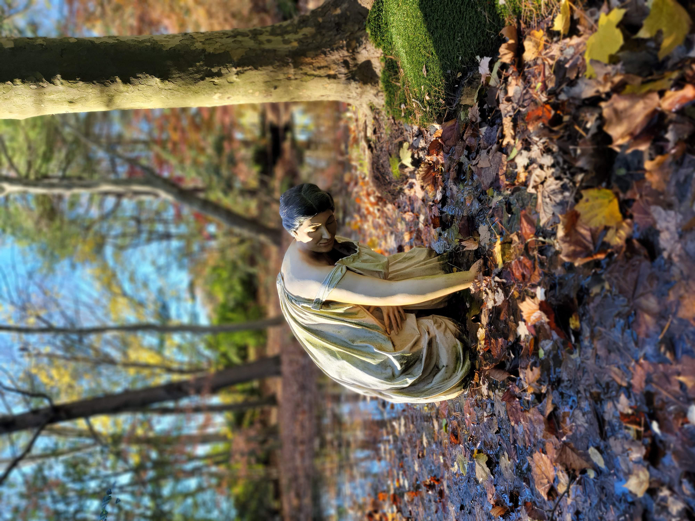
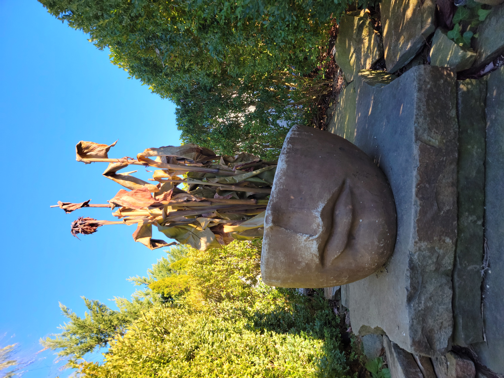
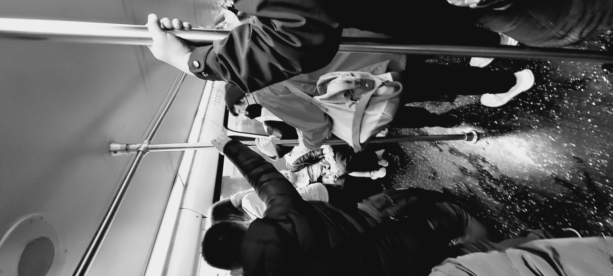
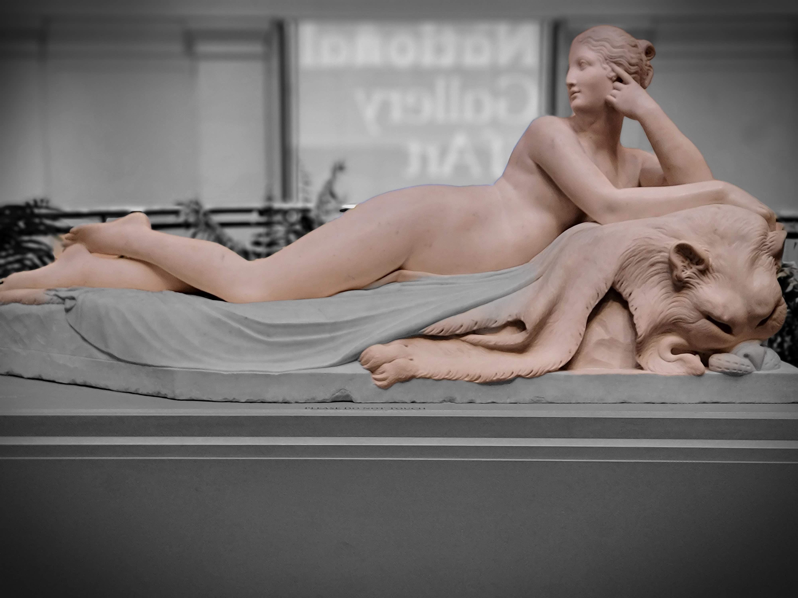